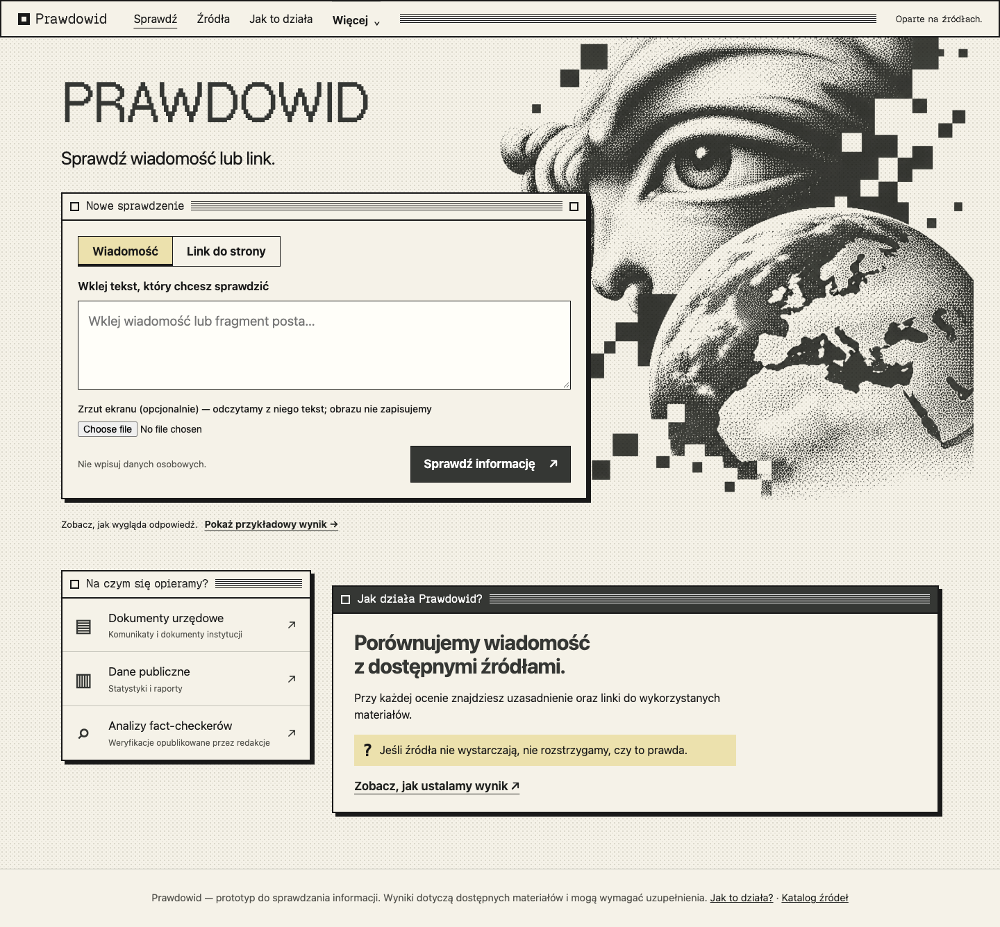
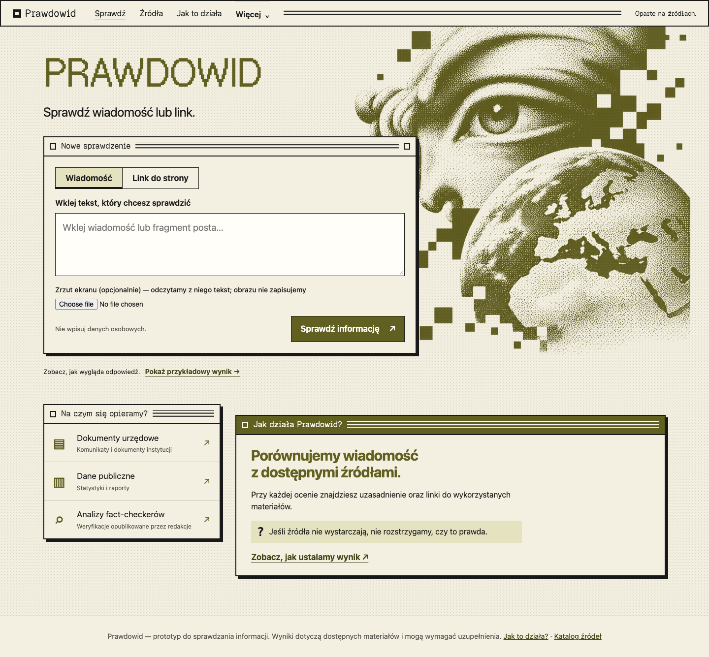
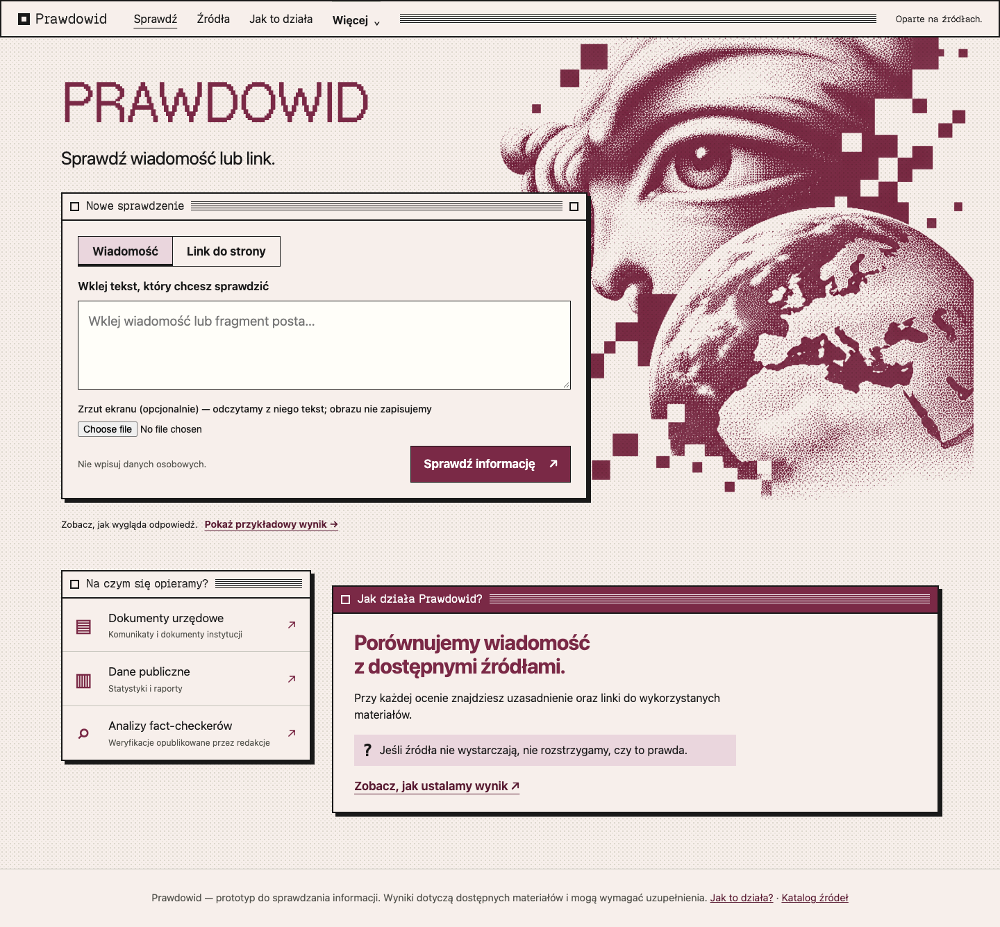
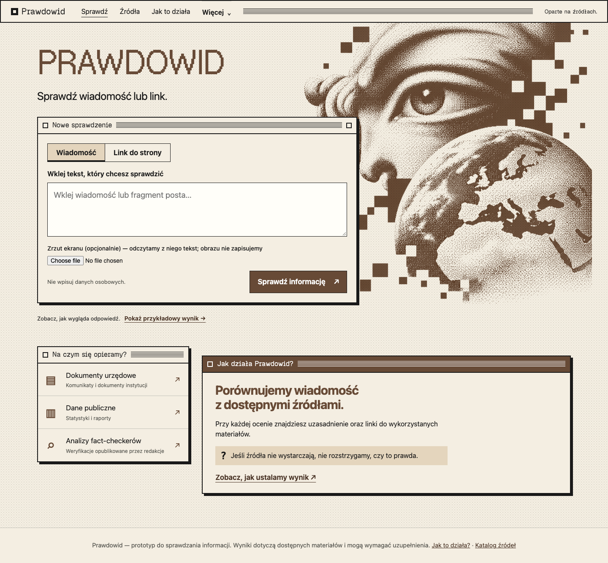
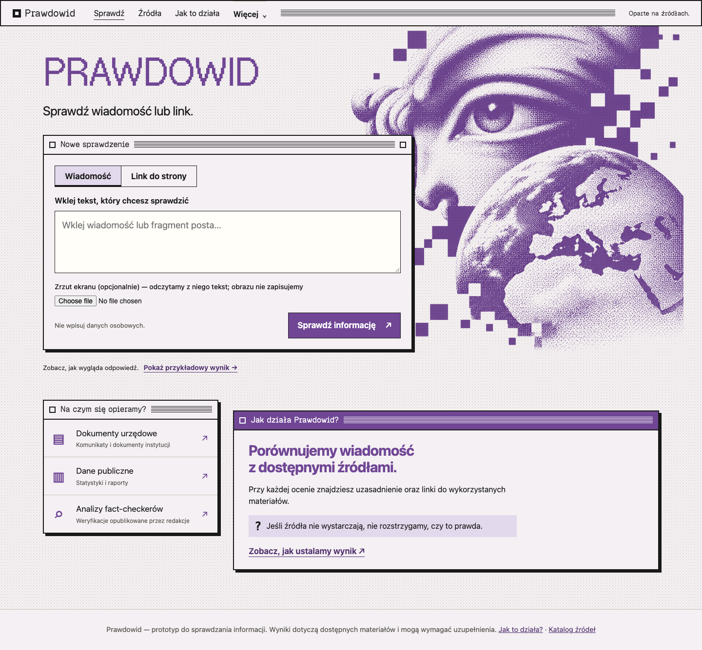
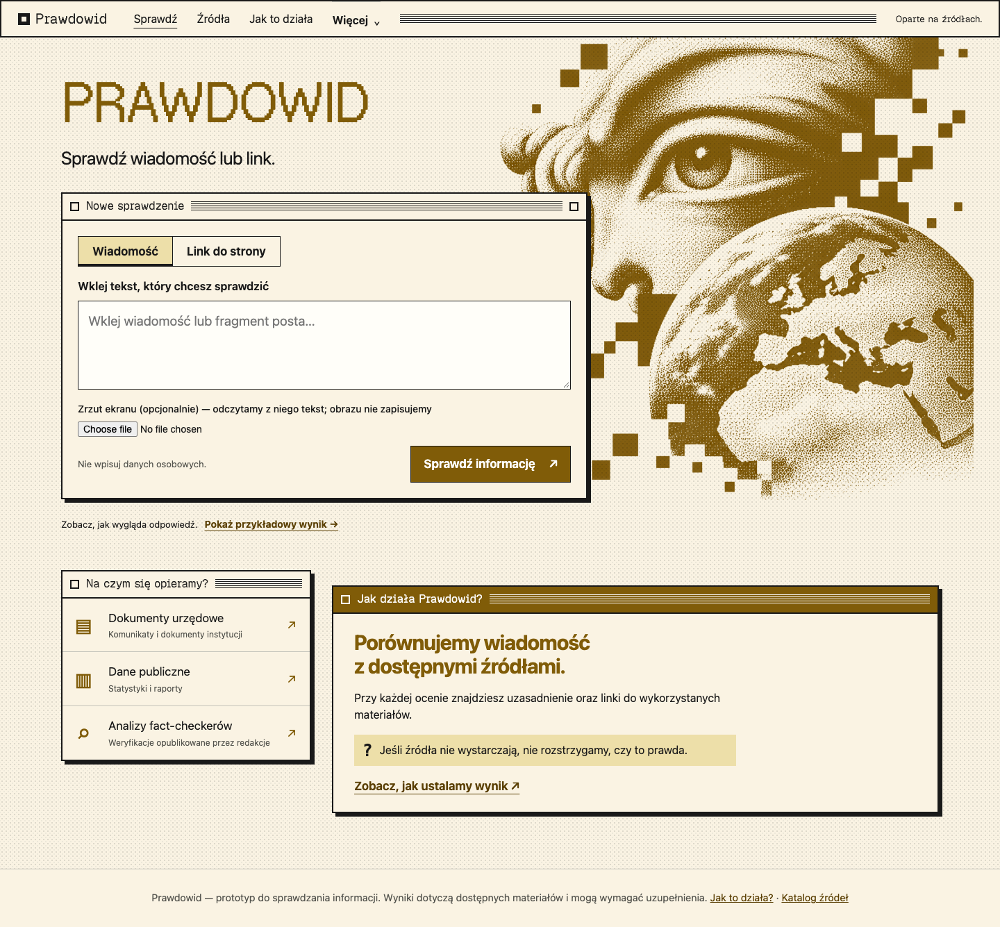

05 / Grafit i wanilia
#353734#20221f#f5f2e8#ece1ad

Najbardziej oszczędny: grafitowa ilustracja i waniliowe akcenty. Techniczny, mocny i ponadczasowy.
06 / Oliwka i len
#626021#444316#f4f0e1#e5e2bf

Wyraźnie żółtozielony kierunek. Przywodzi na myśl atlas, bibliotekę i papierowe archiwum.
07 / Bordo i różany papier
#7a2946#591b32#f7efeb#ead6dd

Szlachetny i zdecydowany, z charakterem redakcji. Bordo marki wymaga wyraźnego oddzielenia od czerwieni fałszu.
08 / Kakao i owies
#674a36#483224#f4eee2#e4d5bd

Najcieplejszy, spokojny duoton. Dobrze podkreśla rycinę i daje efekt starego druku.
09 / Ametyst i kreda
#704695#50316e#f4f0f3#e3d9ec

Bardziej współczesny i wyrazisty fiolet. Zachowuje cyfrowy charakter bez niebieskiego akcentu.
10 / Bursztyn i krem
#805c08#5b4004#faf3e3#eddfa9

Złocisty, ciepły i plakatowy. Przygaszony bursztyn utrzymuje czytelność tekstów i przycisków.